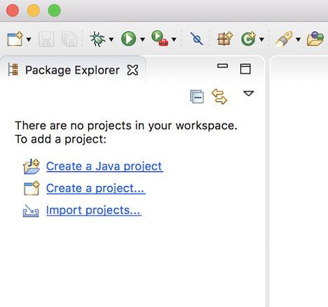
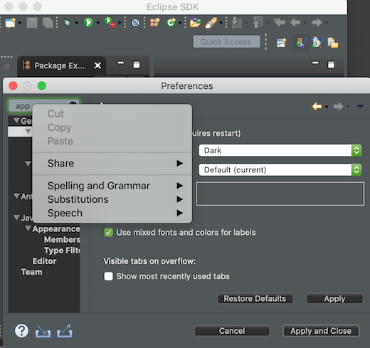
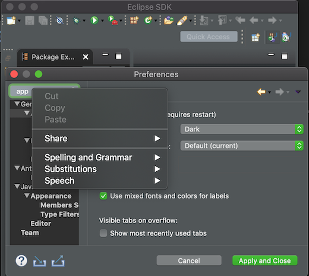

| Copy & paste of Environment Variables |
The Environment tab in a launch configuration dialog supports copy &
paste actions now. The environment variables are transferred as text data, so it is not only possible
to copy & paste between two different launch configurations, but also between
the launch configuration and e.g. some text editor or the command line.

This feature is available in all launch configurations which use the common Environment tab.
|
| Useful links to add projects to empty workspace |
When Eclipse IDE is started for the first time or with a new workspace, it may not be intuitive for new users on how to proceed.
To help the users in getting started, the following useful links have been provided to add a project to the workspace:
- Perspective specific project creation wizard
- Generic New Project wizard
- Import projects wizard

|
| Improved Dark theme for Mac |
The Dark theme for Mac has been improved to use the colors from the macOS system dark appearance.
Some of the notable changes in Eclipse IDE are the dark window title bar, menus, file dialogs, combos and buttons.
Note: This change is available on macOS Mojave and later.
Before:

After:

|